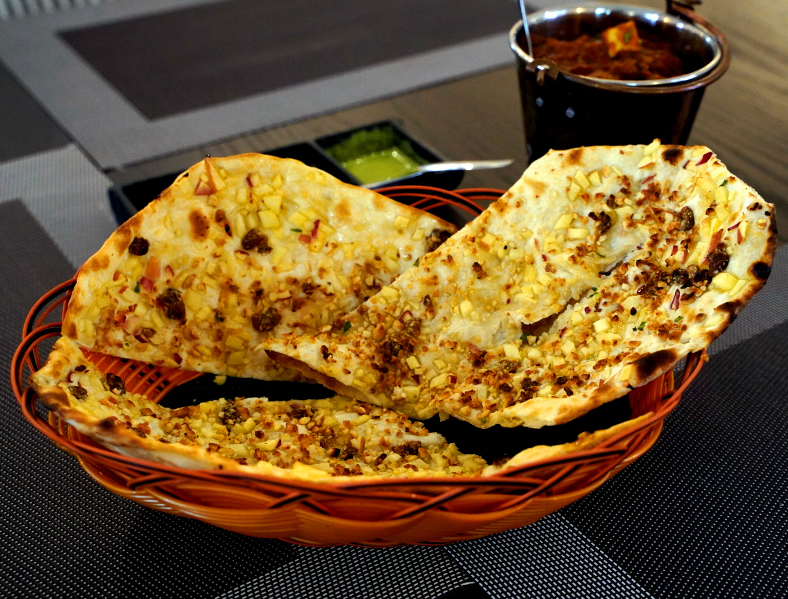

PUTTU
Ingredients
- 2 cups puttu flour add Salt to taste , 1 cup scraped fresh coconut , Elaichi kela to serve.
steps
- Take puttu flour in a large bowl, add salt and mix well. Add water little by little till it resembles breadcrumb consistency. To check, take a small portion of the mixture and press it between your palms and if it comes together then it is ready.
- Add a small portion of the coconut into the puttu maker followed by a generous portion of the puttu rice mixture. Repeat this process till the puttu maker is filled till the top. Cover with the lid.
- Heat sufficient water in the puttu maker pot and let it come to a boil. Place the puttu maker on it and steam for 5-6 minutes.
- Take the puttu maker off the heat, remove the lid and gently push the puttu out using a satay stick.

Naan
Ingredients
- 1 (.25 ounce) package active dry yeast 1 cup warm water ,¼ cup white sugar , 3 tablespoons milk ,1 large egg, beaten ,2 teaspoons salt , 4 ½ cups bread flour ,2 teaspoons minced garlic (Optional) , ¼ cup butter, melted
steps
- Dissolve yeast in warm water in a large bowl. Let stand about 10 minutes, until frothy.
- Meanwhile, generously oil a large bowl.
- Meanwhile, generously oil a large bowl.
- Stir sugar, milk, egg, and salt into the yeast mixture. Mix in enough flour to make a soft dough.
- Knead dough on a lightly floured surface until smooth, 6 to 8 minutes.
- Place dough in the prepared oil, cover with a damp cloth, and let rise until doubled in size, about 1 hour.
- Punch down dough on a lightly floured surface, and knead in garlic. Pinch off small handfuls of dough about the size of a golf ball; you should have about 14. Roll each piece into a ball and place on a tray. Cover with a towel, and allow to rise until doubled in size, about 30 minutes.
- Meanwhile, preheat a large grill pan over high heat.
- Roll each piece of dough into a thin circle.
- Brush some melted butter on the preheated grill pan.
- Enjoy!

MODUR PULAO
Ingredients
- 1½ cups Daawat Pulav Basmati Rice , 2 tbsps ghee , 1 tsp cumin seeds, 2 black cardamoms , 2 green cardamoms , 2-3 cloves , 1 tsp fennel seeds (saunf) , 1 bay leaf , 1 inch cinnamon stick , 5-6 cashew nuts, halved , 2 tsps raisins , 150 grams cottage cheese (paneer), cut into ½ inch cubes , ½ tsp dried ginger powder (sauth) , ¼ tsp asafoetida (hing) , ½ cup milk .
Steps
- Take Daawat Pulav Basmati Rice in a bowl. Add sufficient water and wash for 2-3 times.
- Add water and soak for 20-25 minutes. Drain the water.
- Heat ghee in a non-stick wide pan. Add cumin seeds, black cardamoms, green cardamoms, cloves, fennel seeds, bay leaf and cinnamon stick and sauté till fragrant.
- Add cashew nuts and raisins and sauté for 1-2 minutes or till the cashew nuts turn golden brown.
- Stir in the cottage cheese cubes and gently mix. Cook for 1 minute.
- Add the dried ginger powder and asafoetida and mix well. Add the soaked rice, 2½ cups hot water, milk and salt and mix well. Cook till the mixture comes to a boil. Cover and cook on medium heat for 10-12 minutes.
- Switch the heat off and allow the pulao to rest for 15 minutes.
- Transfer the pulao on to a serving plate, garnish with fresh pomegranate pearls and serve hot with papad and raita.

Lassi
Ingredients
- 400gms. Curd , 7-8 tbsp. Sugar , ½ tsp. Cardamom Powder , Ice Cubes.
Steps
- Blend all the ingredients together in a mixer/grinder.
- Garnish with saffron strands, pistachios and almonds.
Rabdi
Ingredients
- 1 litre of full fat milk, 4 tbsp of sugar , 1/4th tsp of saffron strands , ½ tsp of cardamom powder , ½ tsp of cornflour , 2 tsp of milk , 1 tsp of milk masala powder , Method .
steps
- In wide pan add full fat milk,sugar,saffron strands and cardamom powder.
- In wide pan add full fat milk,sugar,saffron strands and cardamom powder.
- Once it boils bring the flame to medium and pull the creamy layers aside.
- Boil milks till it comes down to one third quantity.
- Add corn flour in milk and give it a mix then add it to the saffron milk.
- Let it cool down completely.
- Add tsp of milk masala powder and stir it.
- Pour it into a bowl .
- Add the cream into the milk
- Chill it completely.
- Rabri is ready to be served .